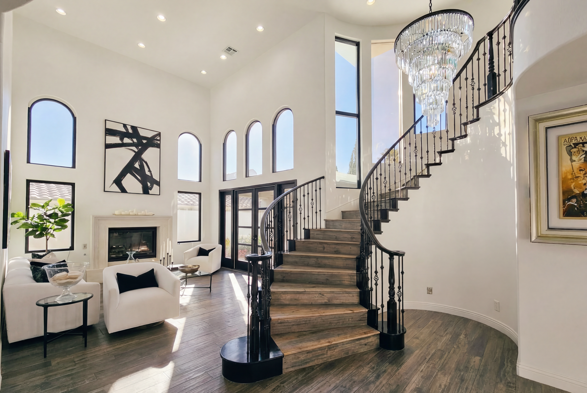

About

I'm Jose, a photographer based in Arizona with a growing focus on architectural and interior photography. I'm drawn to the way built spaces carry intention — the decisions made in materials, light, and proportion that shape how a place feels.
My work is in the early stages, and that's exactly where I want to be: building a focused body of work, one project at a time. I shoot with patience and an eye for the details that most people walk past.
I'm currently available for residential, commercial, and editorial projects throughout Arizona. If you have a space worth photographing, I'd like to hear about it.